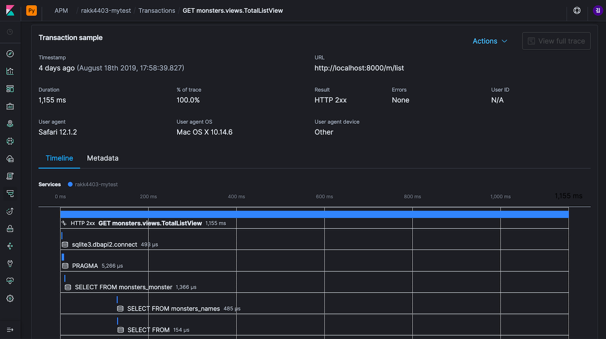

올해도 어김없이 파이콘 행사가 돌아왔습니다. 2017년, 2016년 행사 운영 후기는 남겼는데 작년에는 운영기를 남기지 않았었네요. 그러고보니 블로그도 참 오랬만에 쓰는 것 같습니다.
Elastic 은 올해로 4년째 파이콘 한국 스폰서로 참여하고 있습니다. 처음 참여할때는 저 혼자 부스 지키면서 점심 교대 할 사람도 없어 아침에 김밥 싸 와서 부스 뒤에 앉아 먹고 그랬는데, 올해는 저희 직원분들이 4분이나 같이 해 주셔서 개인적으로 많이 편했습니다. 그러고보니 Elastic 도 이제 전 세계적으로는 직원이 1,500명 한국은 15분이 계시네요. 제가 처음 입사했을땐 전 세계에 200명 이었는데, 회사가 잘 커서 뿌듯합니다. 🥰
부스는 제일 구석에 있었는데, 그래도 꽤나 많은 분들이 와 주셨습니다. 여느 때와 마찬가지로 와서 설문 남겨 주시는 분들께 양말, 티셔츠, 휴대폰 홀더 같은 SWAG 들을 다는 못 드리고 (수량이 부족해서) 50%의 꽝 확률로 추첨해서 드렸습니다. 그래도 첫 날 오후 3시 즘에 다 떨어졌네요.
올해는 저희 행사 예산 중에 상품 구매 예산이 20만원 정도 나와서 3분 정도는 추첨을 통해 더 좋은 경품을 드릴 수 있게 되었습니다. 제가 행사 전날 일렉트로 마트 가서 사 온 경품으로 드릴 짐벌, 키보드, 이어폰 입니다.
하지만 설문만 하신 분들 전부를 대상으로 경품을 추첨 하기는 좀 그랬습니다. 파이콘 하면 열정있는 개발자들이 많이 모이는 곳인데 뭔가 개발자 스러운 챌린지 이벤트를 좀 해야하지 않나 싶었습니다. Elastic Stack 은 여러 제품들로 되어 있지만 사실 파이썬으로 만들어 진 것은 큐레이터 정도 밖에 없어서 파이콘은 항상 참여하면서도 딱히 뭔가 괜찮은 이벤트를 할 아이디어가 그 동안 없었는데, 올해는 아이디어를 좀 내서 Elastic APM 을 수집하는 챌린지를 해 보았습니다. 그래서 챌린지에 참석하신 분들 대상으로 좀 좋은 경품들을 드리기로 했습니다.
저희 Elastic 커뮤니티 회원들이 사용 하는 클라우드 서버가 있는데, 여기 파이콘 이벤트를 위한 스페이스와 전용 계정을 만들고 안내 페이지를 후다닥 구글 도큐먼트로 만들었습니다.
본인이 개발 중인 토이 프로젝트 등에 몇 줄의 코드만 삽입하면 저희가 준비한 클라우드 서버로 APM 데이터가 수집되는 이벤트 입니다. Elastic APM 에서 지원되는 장고, 플래스크, node.js, 레일즈, 스프링 등을 사용 해 보신 분이라면 30분 정도면 금방 할 수 있는 수준이라고 저는 생각했습니다. 업계 유명 연예인이신 변정훈 님이 node.js 로 제일 처음 참여 해 주셨고, 다른 분들도 한분 한분 참여 해 주셨는데, 둘째날 마감 30분 전에 부스 앞에 노트북 들고 앉아서 완성 해 주신 분도 계셨습니다. 일단 수집에 성공하면 클라우드 서버에 바로 목록이 나타나기 때문에 저희가 실시간으로 확인이 가능합니다.

추첨에 참여할 조건은
- APM 데이터가 성공적으로 클라우드에 수집됨
- 일반 설문에 답변하고 설문 마지막 문항에 애플리케이션명 정확히 기입
이었습니다. 한 20분 정도만 지원하면 딱 좋겠다 했는데, 정확히 17분이 지원 해 주셨고 그 중 5분은 설문 미참여 내지는 불확실로 추첨 제외 해서 최종적으로 12분이서 1,2,3등 상품을 두고 사다리 타기를 했습니다. 아래는 사다리 추첨 때의 영상과 사진들입니다.


챌린지 이벤트 진행이 제가 생각했던 모양대로 어느정도 잘 흘러가서 참 좋았습니다. 이벤트 안내 페이지와 클라우드 서버는 파이콘이 끝난 이후에도 계속 유지하고 있습니다. Elastic APM 테스트 해 보실 분들은 지금도 들어가셔서 해 보실 수 있습니다. 이벤트 안내 페이지는 여기 있습니다.
일반 SWAG 추첨이랑 챌린지 이벤트 외에도 올해는 Elastic Cloud 30일 무료 제공 코드도 가지고 왔습니다. 그냥 가입하면 원래는 14일간 무료입니다. 스탠딩 배너에 저희 한국 Elastic 페이스북 커뮤니티로 링크되는 QR 코드까지 포함하면 이번 부스에는 가지고 온 QR 코드 링크만 4개였네요
올해는 부스에서 도와 주신 분들이 많아 맘 편하게 세션도 몇개 들을 수 있었습니다. 파이콘 대가이시면서 저희 서포트 엔지니어이신 조인석님의 발표도 들었습니다.
올해도 여느때와 마찬가지로 즐거운 시간이었습니다. 매년 점점 더 발전하면서도 처음의 즐거움과 열정을 잃지 않는 파이썬 커뮤니티, 앞으로도 계속 번창하길 바라겠습니다. 내년에는 Gold 보다 더 높은 스폰서로 참여할 수 있도록 노력 해 보겠습니다.